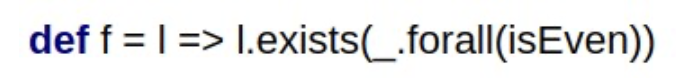
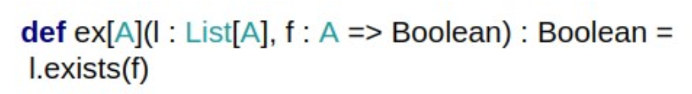
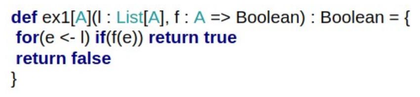
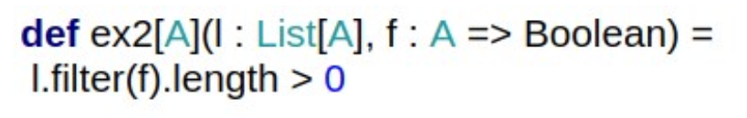

On which inputs will the above function f return true?

List(List(2,4), List(1,2), List(6,3))
List(List(6,8),List(4,6))
List(List())
Ex is defined as above, as a call to library function exists. Which of the following functions are equivalent to ex? You can assume that the argument f performs no side effects. Select zero or more.

These two:


Which of the following expressions are equivalent for all l,f,g and h? You can assume that f, g and h are pure functions. Select 0 or more.